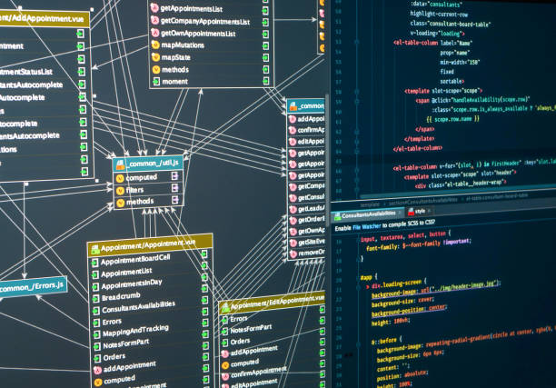
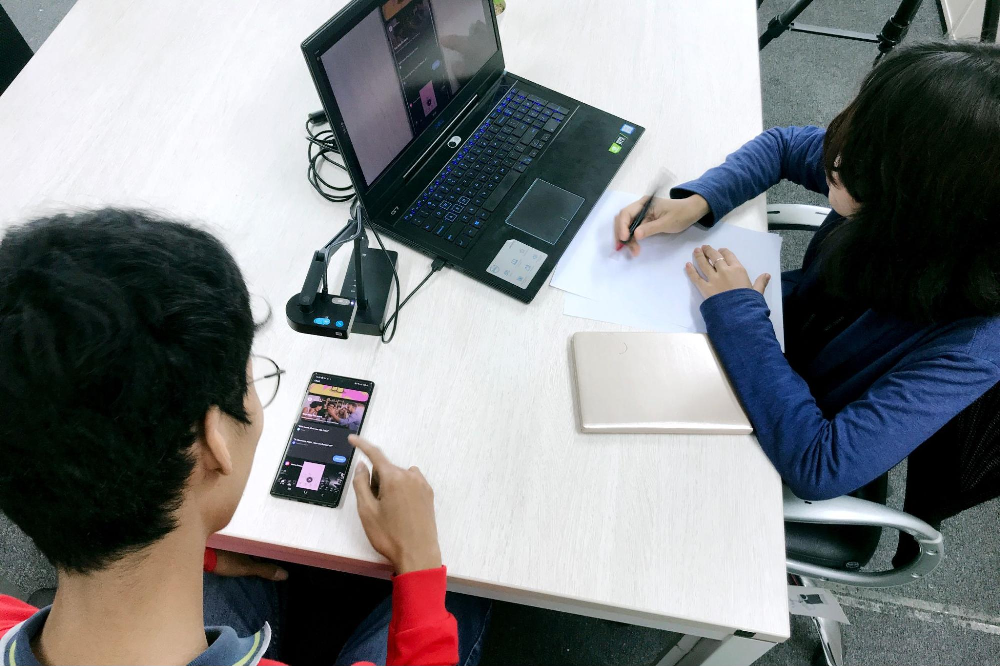
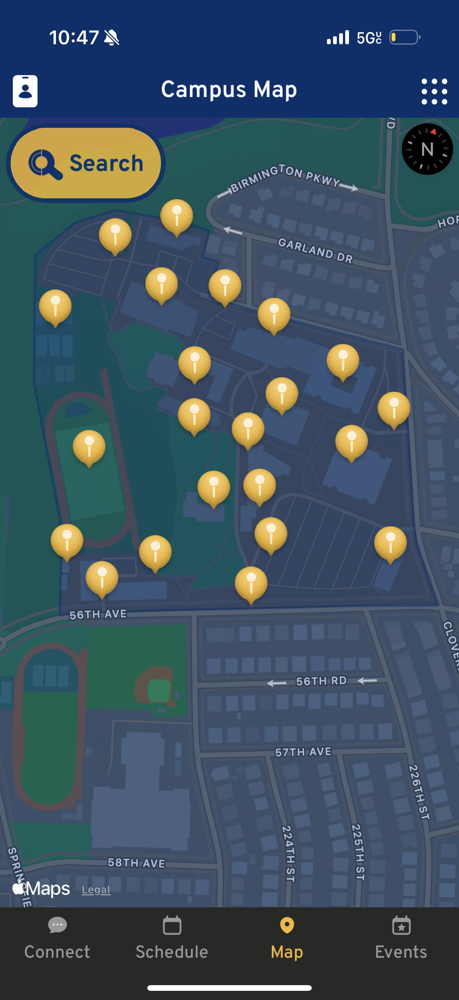
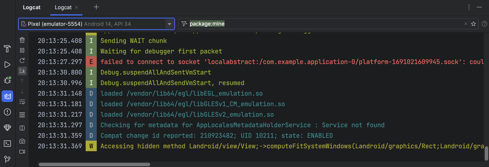
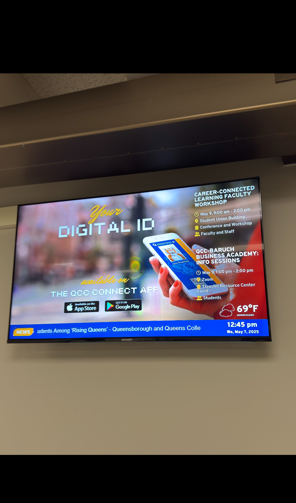

Final Product Showcase
The QCC Connect app was transformed into a user-friendly, responsive tool tailored to student needs. Explore the key features and design of the launched application below.
Key Features of Launched App
- Dark Mode for enhanced accessibility
- Real-time Transit Tracker
- Interactive Campus Map
- Biometric Sign-in
- Redesigned Schedule View
Project Process Overview
- Send out screener
- Conduct interviews
- Competitive analysis
- Define problem
- Sketching
- Define MVP
- User stories
- Sharpen user stories
- Prioritize features
- Wireframes
- Prototype
- Usability tests
- Reiteration
Auditing the Existing Experience
Next, we performed a formal heuristic evaluation using established usability principles to systematically identify additional issues and opportunities for improvement.
The initial phase of the project involved a comprehensive audit of the existing QCC Connect application. This critical step aimed to identify key usability issues, pain points in the user journey, and areas where the app failed to meet student expectations. The process included a heuristic evaluation, an in-depth analysis of the user interface and navigation flows, and a review of available analytics to understand user engagement and drop-off rates. The findings from this audit, visually exemplified by screenshots of the previous interface, clearly indicated a need for significant improvements in clarity, performance, and feature set to better serve the student body.
Examples of the previous QCC Connect app interface, highlighting areas for improvement.
User Research & Discovery
To gather comprehensive user data, a multi-faceted research approach was employed, including:
• Surveys & Screener Forms for recruitment
• In-depth interviews with current students
• Usability testing of the existing app to observe real-world frustrations
• A competitive analysis to benchmark against similar products.
Participant Overview
Survey Participants by Major
Participants by Method
Insights from Interviews
Performance
"Pages load very slowly..."
"There's a noticeable delay..."
"The app freezes..."
UI/UX Design
"The layout is confusing..."
"Some buttons don't look like buttons..."
"The schedule section feels cluttered..."
Features
"It would be useful to see the bus schedule..."
"The campus map is too basic..."
"I wish I could see my student ID..."
Stability
"Sometimes the app logs me out randomly..."
"It crashed when I was trying to look up my course list..."
"There were multiple times I couldn't log in..."
Usefulness
"The app has potential, but I only use it for one or two things..."
"It doesn't really add much beyond..."
"Most of my classmates don't even know..."
The key user personas were then developed by synthesizing these direct user insights from interviews, along with broader patterns identified from survey responses and observations during usability testing of the original application. This process allowed for the creation of representative archetypes that encapsulate the primary goals, motivations, frustrations, and behaviors of distinct user segments within the QCC student body.
Key User Personas
- Quickly check class schedule & room changes.
- Find contact info for advisors or health services easily.
- Get real-time updates on campus shuttle/bus.
- Stay informed about important campus announcements.
- App is slow and often crashes when she's in a hurry.
- Confusing navigation makes finding information a chore.
- No easy way to see her digital ID or transit pass.
- Feels disconnected from campus events she might be interested in.
- Navigate the campus and find building locations.
- Discover student clubs and upcoming events.
- Access library resources and book study rooms.
- Understand what services are available to him as a new student.
- Current campus map is not interactive or helpful.
- Unaware of many app features because they are hidden or unclear.
- Information about student services is hard to find.
- Overwhelmed by too much information not relevant to him.
Synthesis & Problem Definition
Feedback from user research was synthesized using affinity maps (insights detailed above) to identify recurring themes. This process led to the definition of the following key problem statements that guided the redesign efforts:
Lack of Clarity & Navigation
Students struggle to find important features like schedules, contacts, and transit information due to a confusing interface and poor visual hierarchy.
Inconsistent Performance
Users experience frequent app crashes, slow loading times, and random logouts, leading to frustration and abandonment of the app.
Missing or Underutilized Features
The app does not currently support key tools that students expect, such as a campus map, student ID, transit tracker, or event reminders, making it less useful for daily student life.
Low User Awareness & Engagement
Many students are unaware of the app's existence or don't understand its value, resulting in low engagement despite its potential utility.
Accessibility Barriers
The lack of features like dark mode, biometric login, or customizable views makes the app less accessible and convenient for a diverse student body.
Defining MVP & Opportunities
Based on the synthesized research and problem statements, high-impact improvements were prioritized to define a Minimum Viable Product (MVP). A crucial consideration throughout this process was the adherence to CUNY's WCAG 2.1 Level AA accessibility standards, ensuring the app would be usable by all students. User stories were then crafted to ensure proposed solutions directly addressed student needs and goals while meeting these accessibility requirements.
Wireframes & Ideation
Low-fidelity wireframes were created to map out core user flows and screen layouts based on initial research and problem statements. These helped in visualizing the structure before detailed design.
Wireframe: Dashboard/Home Screen
Wireframe: Schedule View
Wireframe: Events List
Wireframe: Student ID Card
Prototyping
Mid-to-high fidelity wireframes were developed to solidify the user interface structure and core interactions for key screens. These provided a clearer blueprint for visual design and development, evolving from earlier sketches based on user feedback.
Mid-Fidelity Wireframe: Connect Home Screen
Mid-Fidelity Wireframe: Schedule View
Mid-Fidelity Wireframe: Student ID Card
Mid-Fidelity Wireframe: Campus Map
Mid-Fidelity Wireframe: Contact Us (Refined)
Mid-Fidelity Wireframe: App Launcher View
Usability Metrics: Original vs. Redesigned App
To showcase the impact of the redesign, this section presents key usability metrics. First, a baseline from the original app, followed by the results achieved after testing the new prototypes. This comparison highlights the improvements in user experience.
Original: Avg. Task Time
Baseline: 95 seconds (Higher indicates difficulty)
Original: User Error Rate
Baseline: 35% (Higher indicates frequent errors)
Original: SUS Score
Baseline: 42 / 100 (Significantly below average usability)
Redesigned: Avg. Task Time
Achieved: 30 seconds (Lower is better)
Redesigned: User Error Rate
Achieved: 8% (Lower is better)
Redesigned: SUS Score
Achieved: 78 / 100 (Higher is better; >68 is above average)
Team Collaboration & Handoff
Before final handoff to the development team, the app's UI design toolkit required formal approval from CUNY. This involved submitting a Graphic Design and Identity Services application to ensure compliance with university branding and visual standards. Once approved, final designs and assets were provided to developers. Close collaboration, including QA sessions, then ensured implementation fidelity. The matrix below outlines team responsibilities for addressing key issue categories identified during research.
| Issue Category | Description | Team Responsible |
|---|---|---|
| Performance | Slow loading, freezing, lag | Development Engineering |
| UI/UX Design | Confusing layout, unclear buttons | UX Design Product Design |
| Features | Missing transit tracker, map, ID | Product Management Engineering |
| Stability | App crashes, login bugs, logouts | QA/Testing Engineering |
| Usefulness | Low awareness & engagement | Marketing UX Research |
Addressing Key Issues & Implemented Solutions
Following user research and problem definition, targeted solutions were developed and implemented by the respective teams to address the core issues impacting the QCC Connect app's user experience. Each solution aimed to directly alleviate student frustrations and enhance the app's overall usability and value.
Optimized App Speed & Responsiveness
The Development and Engineering teams undertook significant code refactoring and backend optimizations. This included streamlining database queries, optimizing image assets, and implementing more efficient data loading mechanisms to drastically reduce loading times and eliminate freezing or lag issues.
Intuitive Redesign & Clear Navigation
The UX Design and Product Design teams completely overhauled the app's interface. This involved establishing a clear visual hierarchy, redesigning confusing layouts (like the schedule), ensuring interactive elements were clearly identifiable, and simplifying navigation pathways to make information more accessible.
Implemented High-Demand Features
Based on student feedback, the Product Management and Engineering teams prioritized and integrated essential new features. These included a real-time transit tracker, an interactive campus map, and a digital student ID card, directly addressing previously missing functionalities critical for daily student life.
Enhanced App Stability & Reliability
The QA/Testing and Engineering teams focused on identifying and resolving critical bugs that caused app crashes, login issues, and random logouts. Rigorous testing cycles and debugging efforts led to a significantly more stable and reliable application.
Increased Awareness & Engagement
To address low awareness, the Marketing and UX Research teams collaborated on initiatives. The Marketing department created introductory pamphlets about the app for new students and launched a promotional campaign on digital signage screens across campus, highlighting the app's benefits and new features, thereby boosting its perceived usefulness and encouraging adoption.
Launch & Future Considerations
Following the successful redesign and development process, the QCC Connect app was launched, transformed into a user-friendly and responsive tool (as showcased at the beginning of this portfolio). Post-launch analytics and user support channels are being actively monitored. These ongoing insights will inform future updates, iterations, and continued improvements to the student experience, ensuring the app remains a valuable resource for the QCC community.
Launched App Highlights
Key Features Recap
- Dark Mode for enhanced accessibility
- Real-time Transit Tracker
- Interactive Campus Map
- Biometric Sign-in
- Redesigned Schedule View